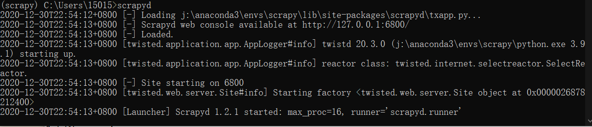
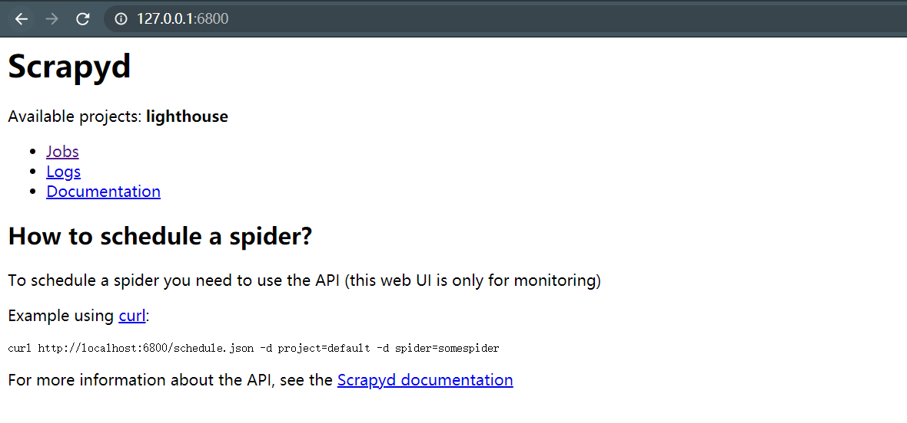
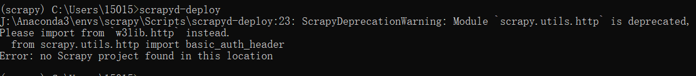
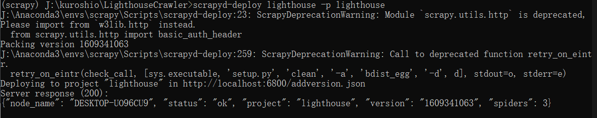

# 概述
本文将使用到下面三个框架
- Scrapy（Web 爬虫框架）：Scrapy 是一套基于基于 Twisted 的异步处理框架，纯 python 实现的爬虫框架，用户只需要定制开发几个模块就可以轻松的实现一个爬虫
- Scrapyd（爬虫服务器）：Scrapyd 是用于部署和运行 Scrapy 的应用程序。它可以使用 JSON API 部署（上载）Scrapy 的项目并控制每个作业
- Scrapyd-Client （Scrapyd 客户端）：Scrapyd-Client 用于把 Scrapy 项目部署在 Scrapyd 服务器上
# 安装 Scrapyd
- 安装 scrapyd
- 打开命令行，运行服务器
可以看见下面输出

浏览器打开 http://127.0.0.1:6800/，可以看见服务器的界面

其中 job 为任务管理，logs 为执行日志，Documentation 为 scrapyd 的文档
这时 scrapyd 并没有部署任何 scrapy 项目，接下来我们使用 Scrapyd-Client 部署 scrapy 项目，切记不要关闭该命令行窗口
# 部署 Scrapy 项目
- 安装 Scrapyd-Client
| pip install scrapyd-client |
- 检查是否安装成功
如果安装成功会出现下面提示

因为当前文件夹并不是 scrapy 项目，所以会提示找不到 scrapy 项目
需要注意的是，在 windows 环境下，运行该命令会提示不是内部或外部命令，这时候你需要找到你的 python 目录，
由于我使用的是 anaconda 的虚拟环境，所以我的目录是 J:\Anaconda3\envs\scrapy
在 J:\Anaconda3\Scripts 下创建 scrapyd-deploy.bat 文件，写入下面内容，路径替换成自己本机路径
| @echo off |
| "J:\Anaconda3\envs\scrapy\python.exe" "J:\Anaconda3\envs\scrapy\Scripts\scrapyd-deploy" %* |
关闭命令行，重新打开命令，再次输入
- 修改 scrapy 项目配置文件
进入到你的 scrapy 项目下，修改 scrapy.cfg
| [settings] |
| default = LighthouseCrawler.settings |
| |
| [deploy:target] |
| url = http://localhost:6800/ |
| project = prject |
target 为你的服务器命令，prject 是你工程的名字
- 命令进入 scrapy 项目，部署项目
注意： 必须要开启 scrapyd 服务 (步骤一)，否则将提示服务器拒绝
| cd /myscrapy |
| scrapyd-deploy target -p prject |

- 检查服务器是否可用
执行下面命令，并观察启动 scrapyd 的命令行窗口的输出
curl http://localhost:6800/daemonstatus.json
如果没有报错，则成功部署
在 windows 下可能出现下面错误
| builtins.NotImplementedError: spawnProcess not available since pywin32 is not installed. |
则先安装 pywin32
然后把 python 目录 python3\Lib\site-packages\pywin32_system32 下的两个 ddl 文件复制到 C:\Windows\System32，重新打开命令行运行 scrapyd，再次尝试
# API
- 检查服务的负载状态
| curl http://localhost:6800/daemonstatus.json |
响应
| { "status": "ok", "running": "0", "pending": "0", "finished": "0", "node_name": "node-name" } |
- 向项目添加版本，如果不存在则创建项目
| curl http://localhost:6800/addversion.json -F project=myproject -F version=r23 -F egg=@myproject.egg |
响应
| {"status": "ok", "spiders": 3} |
- 安排一次爬虫运行（也称为作业）
| curl http://localhost:6800/schedule.json -d project=myproject -d spider=somespider |
响应
| {"status": "ok", "jobid": "6487ec79947edab326d6db28a2d86511e8247444"} |
- 取消一次爬虫
| curl http://localhost:6800/cancel.json -d project=myproject -d job=6487ec79947edab326d6db28a2d86511e8247444 |
响应
| {"status": "ok", "prevstate": "running"} |
- 获取上传到此 Scrapy 服务器的项目列表
| curl http://localhost:6800/listprojects.json |
响应
| {"status": "ok", "projects": ["myproject", "otherproject"]} |
- 获取可用于某些项目的版本列表
| curl http://localhost:6800/listversions.json?project=myproject |
响应
| {"status": "ok", "versions": ["r99", "r156"]} |
- 获取某个项目的爬虫列表
| curl http://localhost:6800/listspiders.json?project=myproject |
响应
| {"status": "ok", "spiders": ["spider1", "spider2", "spider3"]} |
- 获取作业列表
| curl http://localhost:6800/listjobs.json?project=myproject |
响应
| "pending": [{"id": "78391cc0fcaf11e1b0090800272a6d06", "spider": "spider1"}], |
| "running": [{"id": "422e608f9f28cef127b3d5ef93fe9399", "spider": "spider2", "start_time": "2012-09-12 10:14:03.594664"}], |
| "finished": [{"id": "2f16646cfcaf11e1b0090800272a6d06", "spider": "spider3", "start_time": "2012-09-12 10:14:03.594664", "end_time": "2012-09-12 10:24:03.594664"}]} |
- 删除项目版本
| curl http://localhost:6800/delversion.json -d project=myproject -d version=r99 |
响应
- 删除项目
| curl http://localhost:6800/delproject.json -d project=myproject |
响应